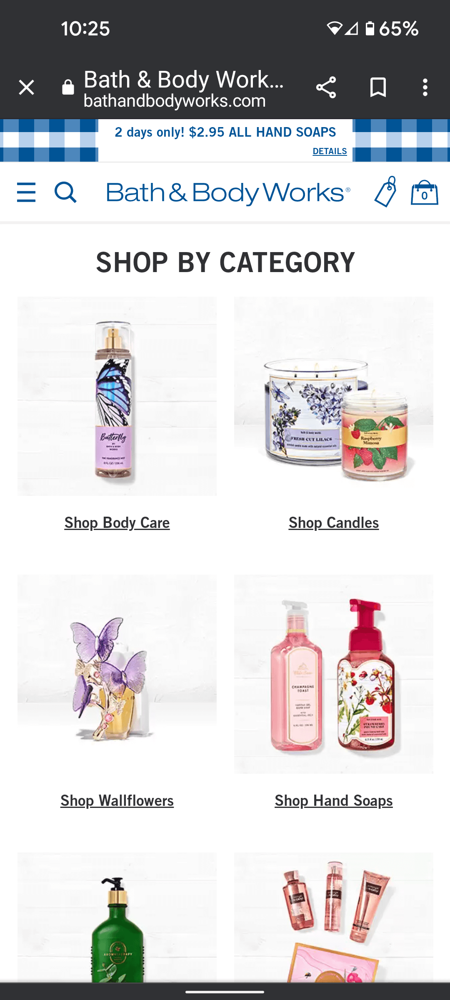
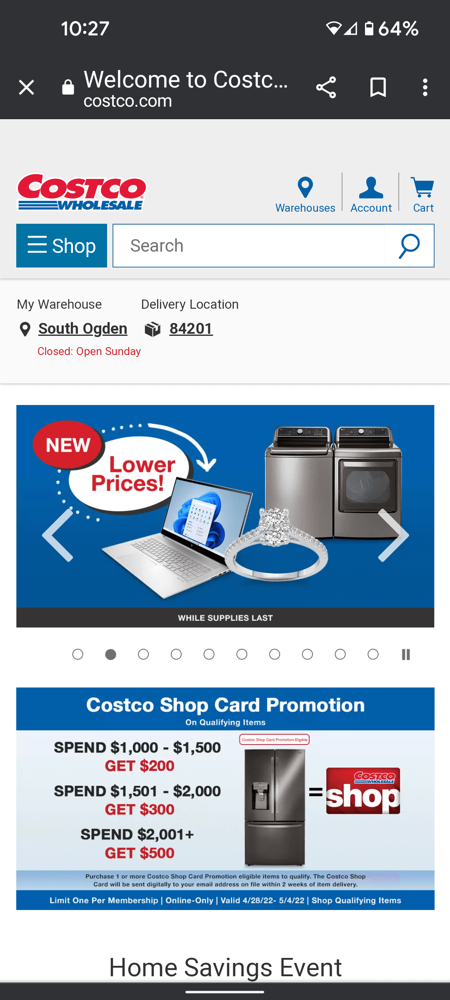
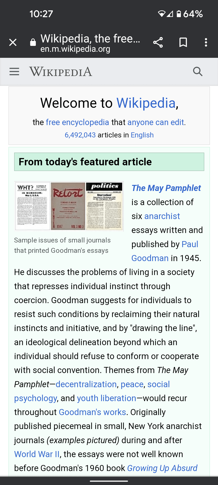

PARC: Alignment
Bath and Body Works
bathandbodyworks.com
The reason I feel this website uses good alignment is that everything is in alignment with eachother. It looks orderly and organized.
Alignment: The elements on a page should be aligned with one another with reasonable reference in that the organization of items improves the readability and thus overall user experience on the page and site.
PARC: Repetition
Costco Wholesale
Costco.com
The reason I feel this website uses good repetition because there is obvious repetition in the colors used, alignment choices and proximity. It looks tied in and the same throughout the entire website. Making it easy to navigate.
Repetition: Proper repetition of content and elements on a page provides a sense of a cohesive relationship between those elements. A design the repeats the same navigation structure, layout, schemes, colors, styles, and fonts throughout a site provides a sense of belonging and enhances the user experience.
PARC: Contrast
Wikipedia
en.wikipedia.org
This shows contrast at it's finest. The color palette is very simple but, in strong contrast with eachother. It is simple but, effective.
Contrast: Contrast is designing a distinct difference between foreground and background colors in order to enhance readability. Contrast does not only deal with colors but also blends into visual hierarchy of font sizes, image placement, and content.